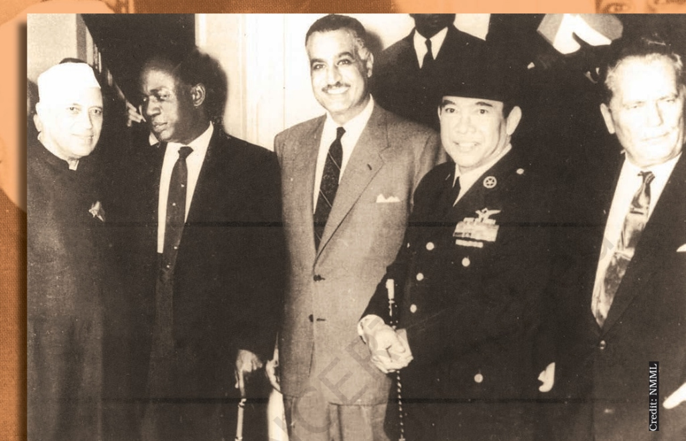
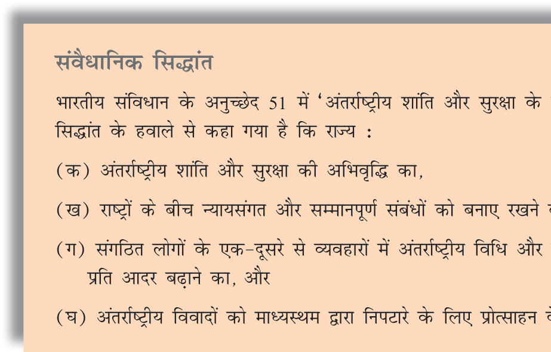
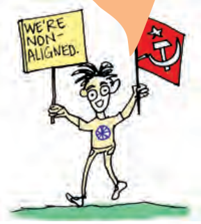
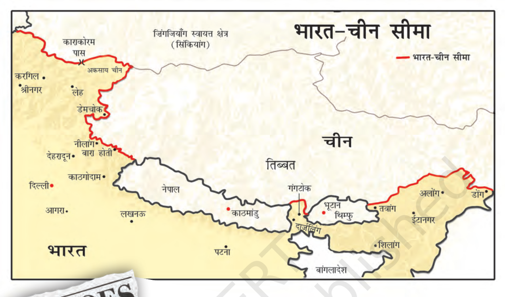
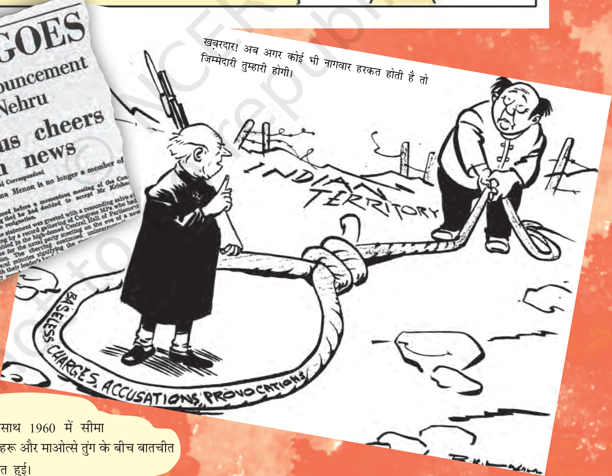
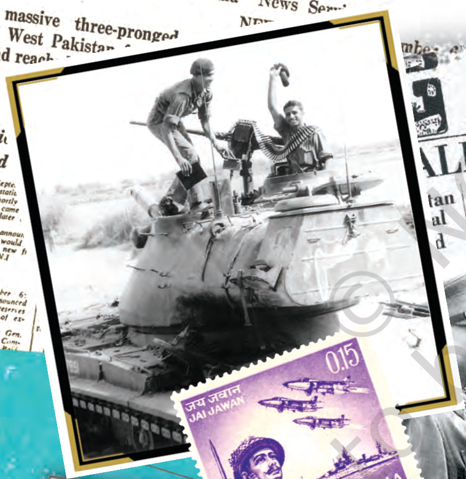
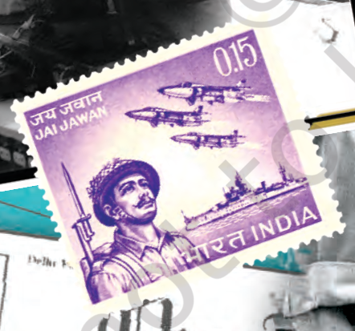
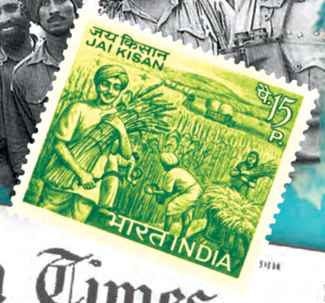
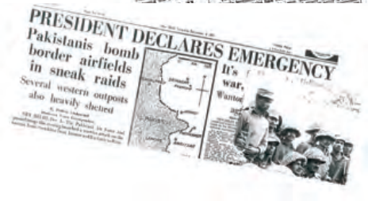
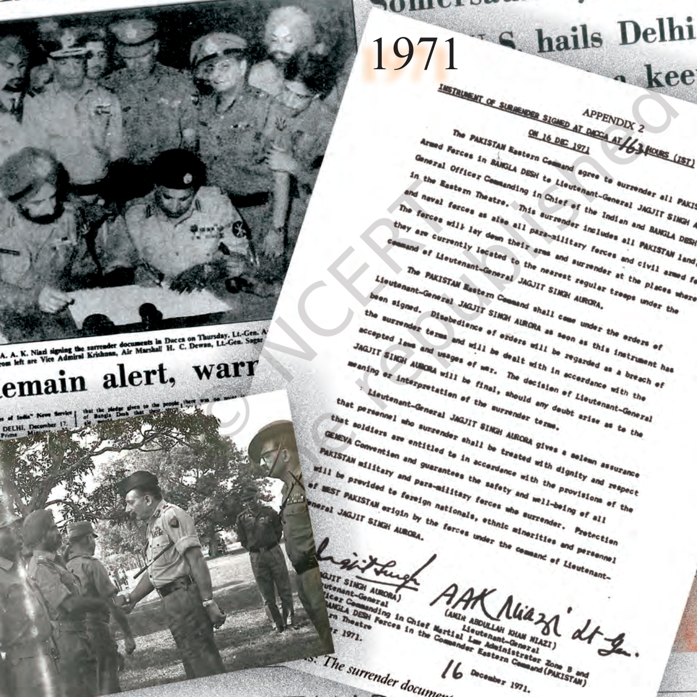

अध्याय 11: भारत के विदेश संबंध
(India's External Relations) - भाग 1: ऐतिहासिक संदर्भ
1. विदेश नीति का जन्म: चुनौतीपूर्ण समय
प्रिय विद्यार्थियों, भारत की आजादी एक ऐसे समय में हुई जब पूरी दुनिया दो गुटों—अमेरिका और सोवियत संघ—में बंटी हुई थी। इसे **'शीत युद्ध'** (Cold War) का दौर कहा जाता है।
आजाद भारत के सामने सबसे बड़ी चुनौती यह थी कि वह अपनी विदेश नीति को कैसे स्वतंत्र रखे ताकि वह फिर से किसी का गुलाम न बने।
2. नेहरू की भूमिका (Nehru's Vision)
भारत के पहले प्रधानमंत्री **जवाहरलाल नेहरू** ने खुद ही विदेश मंत्री के रूप में देश की विदेश नीति की नींव रखी। उनके तीन मुख्य उद्देश्य थे:
- 1. कठिन संघर्ष से प्राप्त संप्रभुता (Sovereignty) को बचाना: किसी बाहरी शक्ति का दबाव न मानना।
- 2. क्षेत्रीय अखंडता (Territorial Integrity) को बनाए रखना: सीमाओं की सुरक्षा सुनिश्चित करना।
- 3. तीव्र आर्थिक विकास: विदेश नीति ऐसी हो जो देश के विकास में मदद करे।
जवाहरलाल नेहरू (1889 - 1964)
• उपाधि: स्वतंत्र भारत के पहले प्रधानमंत्री और विदेश मंत्री।
• विदेश नीति के शिल्पी: इन्होंने 1947 से 1964 तक भारत की विदेश नीति का नेतृत्व स्वयं किया।
• मूल तीन उद्देश्य: (1) कठिन संघर्ष से प्राप्त संप्रभुता को बचाए रखना, (2) देश की क्षेत्रीय अखंडता को सुरक्षित रखना, और (3) योजनाबद्ध तरीके से तीव्र आर्थिक विकास करना।
• दृष्टिकोण: ये साम्राज्यवाद, उपनिवेशवाद और जातिवाद के कट्टर विरोधी थे और गुटनिरपेक्ष आंदोलन के पांच प्रमुख संस्थापकों में से एक थे।
3. अफ़्रीकी-एशियाई एकता (Afro-Asian Unity)
नेहरू चाहते थे कि एशिया और अफ्रीका के देश जो अभी-अभी आजाद हुए हैं, वे एकजुट हों। इसी उद्देश्य से **1955 में बांडुंग सम्मेलन** (Bandung Conference) हुआ।
- बांडुंग सम्मेलन: इस सम्मेलन ने 'गुटनिरपेक्ष आंदोलन' (NAM) की नींव रखी।
- एशियाई संबंध सम्मेलन (1947): आजादी से पहले ही नेहरू ने एशियाई एकता के लिए कोशिशें शुरू कर दी थीं।

NCERT पुस्तक का प्रसिद्ध चित्र (Bandung Conference - 1955):
विवरण: इंडोनेशिया के शहर बांडुंग में आयोजित ऐतिहासिक एशियाई-अफ़्रीकी सम्मेलन में भाग लेते हुए भारतीय प्रधानमंत्री जवाहरलाल नेहरू, मिस्र के राष्ट्रपति गमाल अब्देल नासिर और अन्य राष्ट्राध्यक्ष।
बोर्ड परीक्षा विशेष प्रश्नोत्तर (CBSE Board Q&A):
• प्रश्न 1: बांडुंग सम्मेलन कब हुआ था और इसका क्या ऐतिहासिक महत्त्व है?
• उत्तर: बांडुंग सम्मेलन **अप्रैल 1955** में इंडोनेशिया में हुआ था। यह सम्मेलन नव-स्वतंत्र एशियाई और अफ़्रीकी देशों के बीच आपसी सहयोग और उपनिवेशवाद के विरोध का सबसे बड़ा मंच था। इसी सम्मेलन में **गुटनिरपेक्ष आंदोलन (NAM)** की औपचारिक नींव पड़ी थी।
• प्रश्न 2: एशियाई संबंध सम्मेलन (Asian Relations Conference) कब हुआ था?
• उत्तर: भारत की आजादी से पांच महीने पहले, **मार्च 1947** में नई दिल्ली में जवाहरलाल नेहरू के नेतृत्व में एशियाई संबंध सम्मेलन आयोजित किया गया था, जो एशियाई एकता का शुरुआती प्रयास था।

NCERT पुस्तक का प्रसिद्ध कार्टून (Nehru Tightrope Cartoon by Shankar):
विवरण: इस प्रसिद्ध कार्टून में प्रधानमंत्री जवाहरलाल नेहरू को अमेरिका (USA) और सोवियत संघ (USSR) नामक दो बड़ी महाशक्तियों के बीच एक तंग रस्सी पर संतुलन बनाते हुए दिखाया गया है, जबकि उनके सहयोगी उन्हें घबराहट से देख रहे हैं।
बोर्ड परीक्षा विशेष कार्टून आधारित प्रश्नोत्तर (CBSE Board Q&A):
• प्रश्न 1: यह कार्टून भारत की विदेश नीति की किस प्रमुख रणनीति को दर्शाता है?
• उत्तर: यह कार्टून भारत की **गुटनिरपेक्षता की नीति (Policy of Non-Alignment)** को दर्शाता है, जिसमें भारत दोनों महाशक्तियों के सैन्य गुटों से अलग रहकर अपनी स्वतंत्र नीति और दोनों पक्षों से अच्छे संबंध संतुलित रखने का प्रयास कर रहा था।
• प्रश्न 2: आलोचक इस संतुलन बनाने की नीति को 'सिद्धांतहीन' क्यों कहते थे?
• उत्तर: आलोचकों का तर्क था कि भारत का संतुलन हमेशा एक समान नहीं रहता था। उदाहरण के लिए, जब 1956 में सोवियत संघ ने हंगरी पर हमला किया, तो भारत ने इसकी सार्वजनिक आलोचना नहीं की, जबकि पश्चिमी देशों के हमलों (जैसे स्वेज नहर संकट) पर भारत बहुत मुखर था।
संप्रभुता (Sovereignty): किसी देश की वह सर्वोच्च शक्ति जो उसे अपने मामलों में स्वतंत्र रूप से निर्णय लेने का अधिकार देती है।
भाग 2: गुटनिरपेक्षता की नीति (Policy of Non-Alignment)
जब पूरी दुनिया दो महाशक्तियों—अमेरिका और सोवियत संघ—के बीच बंटी हुई थी, तब भारत ने एक साहसिक फैसला लिया। भारत ने किसी भी गुट में शामिल होने से मना कर दिया और एक स्वतंत्र रास्ता चुना।
1. गुटनिरपेक्षता क्या है? (What is NAM?)
गुटनिरपेक्षता का मतलब यह नहीं है कि भारत दुनिया की समस्याओं से दूर रहेगा। इसका अर्थ है कि भारत सैन्य गुटबाजी से अलग रहकर हर मुद्दे पर अपनी स्वतंत्र राय रखेगा।
- मुख्य संस्थापक: जवाहरलाल नेहरू (भारत), नासिर (मिस्र), और टीटो (युगोस्लाविया)।
- पहला सम्मेलन: बेलग्रेड (युगोस्लाविया) में 1961 में। (NCERT Fact)
- उद्देश्य: नव-स्वतंत्र देशों की आजादी को बचाना और विश्व शांति के लिए काम करना।
गुटनिरपेक्षता के मुख्य लाभ
भारत ने इस नीति को क्यों अपनाया? इसके प्रमुख कारण निम्नलिखित थे:
- 1. राष्ट्रीय संप्रभुता और स्वतंत्र निर्णय: भारत किसी भी महाशक्ति के दबाव में आए बिना वैश्विक मंच पर अपने फैसले देशहित में स्वतंत्र रूप से ले सकता था।
- 2. संतुलित आर्थिक व तकनीकी सहायता: भारत दोनों महाशक्ति गुटों (अमेरिका और सोवियत संघ) से अपनी विकासात्मक आवश्यकताओं के अनुसार ऋण, तकनीक और खाद्य सहायता ले सकता था।
- 3. वैश्विक मध्यस्थता और शांति स्थापना: भारत ने कोरियाई युद्ध (1950-53) और स्वेज नहर संकट (1956) में दोनों गुटों के बीच मध्यस्थता (Mediation) कर विश्व शांति को बनाए रखने में बड़ी भूमिका निभाई।
- 4. अंतरराष्ट्रीय स्तर पर नेतृत्व और प्रतिष्ठा: नव-स्वतंत्र देशों (तीसरी दुनिया - Third World) को एक संगठित मंच प्रदान कर भारत अंतरराष्ट्रीय राजनीति में एक महत्वपूर्ण ताकत बनकर उभरा।
- 5. राष्ट्रीय सुरक्षा का संतुलन: एक गुट में शामिल होने से दूसरा गुट भारत का शत्रु बन जाता। गुटनिरपेक्ष रहकर भारत ने अपने सुरक्षा हितों को दोनों पक्षों से सुरक्षित रखा।
2. आलोचना और वास्तविकता
आलोचकों का तर्क था कि भारत की नीति 'सिद्धांतहीन' (Unprincipled) is। 1971 में सोवियत संघ के साथ की गई **'मैत्री संधि'** (Friendship Treaty) को लेकर कुछ लोगों ने कहा कि भारत गुटनिरपेक्षता से हटकर रूस के करीब चला गया है। लेकिन भारत का कहना था कि यह केवल अपनी सुरक्षा के लिए था। (NCERT Insight)

NCERT पुस्तक का प्रसिद्ध कार्टून (Friendship Treaty Cartoon - 1971):
विवरण: इस व्यंग्यात्मक कार्टून में भारतीय विदेश नीति को एक हाथ में "WE'RE NON-ALIGNED" (हम गुटनिरपेक्ष हैं) की तख्ती पकड़े हुए दिखाया गया है, जबकि पीठ के पीछे दूसरे हाथ में सोवियत संघ (USSR) का झंडा छिपा रखा है। यह भारत-सोवियत 1971 मैत्री संधि पर बाहरी दुनिया की आलोचना को दर्शाता है।
बोर्ड परीक्षा विशेष कार्टून आधारित प्रश्नोत्तर (CBSE Board Q&A):
• प्रश्न 1: यह कार्टून किस ऐतिहासिक समझौते की आलोचना करता है?
• उत्तर: यह कार्टून अगस्त 1971 में भारत और सोवियत संघ के बीच हस्ताक्षरित **20-वर्षीय शांति, मैत्री और सहयोग संधि (Treaty of Peace, Friendship and Cooperation)** की आलोचना करता है।
• प्रश्न 2: आलोचक इस संधि को गुटनिरपेक्षता की नीति के खिलाफ क्यों मानते थे?
• उत्तर: आलोचकों का मानना था कि इस संधि पर हस्ताक्षर करके भारत अनौपचारिक रूप से सोवियत संघ के सैन्य और राजनीतिक गुट में शामिल हो गया है, जिससे उसकी निष्पक्ष गुटनिरपेक्षता की छवि समाप्त हो गई है।
• प्रश्न 3: इस संधि पर भारत सरकार का क्या रुख था?
• उत्तर: भारत सरकार का तर्क था कि यह कोई सैन्य गठबंधन नहीं था। 1971 के बांग्लादेश संकट और पाकिस्तान-अमेरिका-चीन के आपसी गठजोड़ के कारण भारत को अपनी सुरक्षा और सैन्य सहायता सुनिश्चित करने के लिए सोवियत संघ के कूटनीतिक समर्थन की सख्त जरूरत थी।
मुख्य विचार:
गुटनिरपेक्षता केवल एक नीति नहीं थी, बल्कि यह **'आत्मसम्मान'** का प्रतीक थी। आज भले ही शीत युद्ध खत्म हो गया हो, लेकिन स्वतंत्र विदेश नीति की जरूरत आज भी उतनी ही है।
भाग 3: चीन के साथ संबंध और 1962 का युद्ध (The China Conflict)
भारत और चीन दो बड़े एशियाई पड़ोसी हैं। नेहरु चाहते थे कि भारत और चीन मिलकर एशिया का भविष्य तय करें, लेकिन इतिहास ने एक अलग ही रास्ता चुन रखा था।
1. पंचशील के पाँच सिद्धांत (1954)
नेहरू और चीन के प्रधानमंत्री **चाऊ एन-लाई** (Zhou Enlai) ने शांति के पाँच सिद्धांतों पर आधारित 'पंचशील' समझौता किया।
- हिंदी-चीनी भाई-भाई: उस समय यह नारा बहुत लोकप्रिय हुआ था। भारत ने चीन के साथ दोस्ती की हर संभव कोशिश की।
- पाँच सिद्धांत: (i) संप्रभुता का सम्मान, (ii) अनाक्रमण, (iii) आंतरिक मामलों में अहस्तक्षेप, (iv) समानता, (v) शांतिपूर्ण सह-अस्तित्व।
NCERT पुस्तक का चित्र (Nehru and Zhou Enlai - 1954):
विवरण: चीनी प्रधानमंत्री चाऊ एन-लाई के साथ बैठक के दौरान गर्मजोशी से चर्चा करते भारतीय प्रधानमंत्री जवाहरलाल नेहरू। इसी मुलाकात में पंचशील समझौते पर हस्ताक्षर हुए थे।
बोर्ड परीक्षा विशेष प्रश्नोत्तर (CBSE Board Q&A):
• प्रश्न 1: पंचशील समझौते पर किन नेताओं ने और कब हस्ताक्षर किए थे?
• उत्तर: इस समझौते पर भारत के प्रधानमंत्री जवाहरलाल नेहरू और चीन के प्रधानमंत्री चाऊ एन-लाई ने **29 अप्रैल 1954** को हस्ताक्षर किए थे।
• प्रश्न 2: पंचशील समझौते का मुख्य उद्देश्य क्या था?
• उत्तर: इसका मुख्य उद्देश्य दोनों पड़ोसी देशों के बीच शांतिपूर्ण सह-अस्तित्व, क्षेत्रीय अखंडता का सम्मान और अनाक्रमण की नीति अपनाकर आपसी संबंधों को मजबूत करना था।
तिब्बत और दलाई लामा का मामला (1959)
चीन ने तिब्बत पर कब्जा कर लिया और वहां दमन शुरू किया। 1959 में तिब्बती आध्यात्मिक गुरु **दलाई लामा** ने भारत में शरण मांगी। भारत ने उन्हें शरण दी, जिसे चीन ने अपने आंतरिक मामलों में 'दखल' माना। यहीं से भारत और चीन के बीच दरार पैदा हुई।
NCERT पुस्तक का चित्र (Dalai Lama escaping Tibet - 1959):
विवरण: तिब्बत पर चीनी सेना के कब्जे और सांस्कृतिक दमन के बाद अपने अनुयायियों के साथ सीमा पार कर भारत में प्रवेश करते हुए तिब्बती धर्मगुरु दलाई लामा।
बोर्ड परीक्षा विशेष प्रश्नोत्तर (CBSE Board Q&A):
• प्रश्न 1: दलाई लामा ने भारत से राजनीतिक शरण कब मांगी और भारत सरकार का क्या निर्णय था?
• उत्तर: दलाई लामा ने **1959** में भारत से राजनीतिक शरण मांगी। भारत सरकार ने मानवीय आधार पर उन्हें और उनके हजारों अनुयायियों को शरण प्रदान की और वे धर्मशाला (हिमाचल प्रदेश) में बस गए।
• प्रश्न 2: तिब्बत मुद्दे को लेकर चीन ने भारत पर क्या आरोप लगाया?
• उत्तर: चीन ने आरोप लगाया कि दलाई लामा को शरण देकर भारत चीन विरोधी गतिविधियों को बढ़ावा दे रहा है और 1954 के पंचशील समझौते (आंतरिक मामलों में अहस्तक्षेप) का उल्लंघन कर रहा है।
2. 1962 का युद्ध (The Border Conflict)
चीन ने अचानक अक्टूबर 1962 में भारत पर आक्रमण कर दिया। भारत दो मोर्चों पर संकट में था—पहला अरुणाचल प्रदेश (नेफ़ा - NEFA) और दूसरा लद्दाख (अक्साई चिन)।
- परिणाम: भारतीय सेना इस हमले के लिए तैयार नहीं थी। चीन ने बहुत सा इलाका कब्जा लिया और अचानक युद्ध विराम की घोषणा कर दी।
- धक्का: इस हार ने भारत की छवि को वैश्विक स्तर पर धक्का पहुँचाया और नेहरू की विदेश नीति की बहुत आलोचना हुई।

NCERT पुस्तक का चित्र (India-China Border Dispute Map):
विवरण: भारत और चीन के बीच विवादित सीमा क्षेत्रों को दर्शाता मानचित्र। इसमें मुख्य रूप से पश्चिमी क्षेत्र (अक्साई चिन) और पूर्वी क्षेत्र (अरुणाचल प्रदेश/नेफा) के विवादित हिस्सों को दर्शाया गया है।
बोर्ड परीक्षा विशेष प्रश्नोत्तर (CBSE Board Q&A):
• प्रश्न 1: 1962 के युद्ध में चीन ने भारत के किन दो प्रमुख क्षेत्रों पर हमला किया था?
• उत्तर: चीन ने भारत के दो क्षेत्रों पर हमला किया: (1) **पश्चिमी क्षेत्र (लद्दाख का अक्साई चिन)**, और (2) **पूर्वी क्षेत्र (अरुणाचल प्रदेश, जिसे तब नेफ़ा - NEFA - उत्तर-पूर्वी सीमांत एजेंसी कहा जाता था)**।
• प्रश्न 2: मैकमोहन रेखा (McMahon Line) क्या है और विवाद में इसकी क्या भूमिका है?
• उत्तर: मैकमोहन रेखा ब्रिटिश शासन के दौरान 1914 में शिमला समझौते के तहत तय की गई भारत और तिब्बत की सीमा रेखा है। चीन इस रेखा को औपनिवेशिक काल का समझौता मानकर स्वीकार नहीं करता है और अरुणाचल प्रदेश के बड़े हिस्से पर अपना दावा जताता है।

NCERT पुस्तक का प्रसिद्ध कार्टून (Chinese Intrusion Cartoon by Shankar):
विवरण: इस व्यंग्यात्मक कार्टून में प्रधानमंत्री नेहरू को एक रस्सी (फांस) लेकर सीमा पार करने वाले चीनी सैनिक को पकड़ने का प्रयास करते दिखाया गया है, जो चीनी घुसपैठ पर भारतीय विदेश नीति के प्रतिक्रियात्मक रवैये को दर्शाता है।
बोर्ड परीक्षा विशेष कार्टून आधारित प्रश्नोत्तर (CBSE Board Q&A):
• प्रश्न 1: यह कार्टून 1962 के युद्ध से पहले सीमा पर किस स्थिति को दर्शाता है?
• उत्तर: यह कार्टून 1950 के दशक के उत्तरार्ध में चीनी घुसपैठ की घटनाओं और भारत सरकार द्वारा कूटनीतिक रूप से उन्हें रोकने के असफल और ढीले प्रयासों को दर्शाता है। नेहरू का मानना था कि बातचीत से विवाद सुलझ जाएगा और चीन कभी बड़ा हमला नहीं करेगा।
NCERT पुस्तक का चित्र (1962 War newspaper clippings):
विवरण: 1962 के भारत-चीन युद्ध के समय के समाचार पत्रों की कतरनें और एक कार्टून जिसमें चीनी हमले के कारण नेहरू सरकार पर संसद और जनता के दबाव को दर्शाया गया है।
बोर्ड परीक्षा विशेष प्रश्नोत्तर (CBSE Board Q&A):
• प्रश्न 1: 1962 के युद्ध के क्या राजनीतिक परिणाम हुए?
• उत्तर: (1) रक्षा मंत्री वी.के. कृष्ण मेनन को इस्तीफा देना पड़ा। (2) नेहरू जी के नेतृत्व को गहरा धक्का लगा। (3) पहली बार संसद में कांग्रेस सरकार के खिलाफ **अविश्वास प्रस्ताव (No-Confidence Motion)** लाया गया। (4) कम्युनिस्ट पार्टी (CPI) में दरार पड़ गई और सोवियत समर्थक और चीन समर्थक धड़े अलग हो गए (CPI-M का गठन)।
वी. के. कृष्ण मेनन (1896 - 1974)
• उपाधि: भारत के प्रसिद्ध राजनयिक, राजनेता और **तत्कालीन रक्षा मंत्री (1957 - 1962)**।
• कूटनीतिक भूमिका: संयुक्त राष्ट्र (UN) में कश्मीर मुद्दे पर भारत का ऐतिहासिक रूप से जोरदार पक्ष रखने वाले प्रखर वक्ता। इन्होंने ब्रिटेन में भारत के उच्चायुक्त के रूप में भी सेवा की।
• 1962 की हार का प्रभाव: चीन के साथ युद्ध में भारतीय सेना की तैयारियों की कमी और विफलता के कारण इनकी कड़ी आलोचना हुई, जिसके बाद इन्हें अपने पद से इस्तीफा देना पड़ा।
• महत्त्व: ये नेहरू के सबसे करीबी दोस्तों और सलाहकारों में से एक थे।
NCERT पुस्तक का विशेष बॉक्स - चित्रपट (फ़िल्म): हक़ीक़त (1964)
• निर्देशन: चेतन आनंद
• मुख्य कलाकार: धर्मेंद्र, बलराज साहनी, विजय आनंद, संजय खान, प्रिया राजवंश
• मुख्य विषयवस्तु: यह फिल्म **1962 के भारत-चीन युद्ध** की पृष्ठभूमि पर आधारित है। इसमें लद्दाख के विवादित क्षेत्र में तैनात भारतीय सैनिकों के मानवीय संघर्ष, वीरता और विपरीत परिस्थितियों में उनके अदम्य साहस को यथार्थवादी ढंग से दर्शाया गया है।
• ऐतिहासिक व राजनीतिक महत्व (NCERT Perspective):
यह फिल्म युद्ध की विभीषिका, सरकार की सैन्य तैयारियों में कमी के दर्द और उस समय के राष्ट्रीय मनोभावों (National Sentiment) को रेखांकित करती है। चेतन आनंद ने इस फिल्म को तत्कालीन प्रधानमंत्री जवाहरलाल नेहरू और लद्दाख के सैनिकों को समर्पित किया था। फिल्म का प्रसिद्ध देशभक्ति गीत **"कर चले हम फ़िदा जान-ओ-तन साथियों, अब तुम्हारे हवाले वतन साथियों"** (गीतकार: कैफ़ी आज़मी, संगीत: मदन मोहन) आज भी राष्ट्रीय गौरव और सैनिकों के बलिदान का अमर प्रतीक माना जाता है।
बोर्ड परीक्षा विशेष प्रश्नोत्तर (CBSE Board Q&A):
• प्रश्न 1: 1962 के युद्ध पर आधारित किस प्रसिद्ध फिल्म का उल्लेख NCERT पुस्तक में सुरक्षा चुनौतियों को समझने के लिए किया गया है?
• उत्तर: इस फिल्म का नाम **"हक़ीक़त" (1964)** है, जिसका निर्देशन **चेतन आनंद** ने किया था।
मुख्य विचार:
1962 के युद्ध ने भारत को यह सिखाया कि **'आदर्शवाद'** (Idealism) और **'यथार्थवाद'** (Realism) के बीच संतुलन जरूरी है। इसके बाद भारत ने अपनी सैन्य शक्ति को बढ़ाने पर ध्यान दिया।
भाग 4: पाकिस्तान के साथ युद्ध और शांति (Wars and Peace)
भारत और पाकिस्तान का इतिहास संघर्ष और समझौतों का रहा है। कश्मीर मुद्दे से शुरू हुई यह रंजिश आज भी बनी हुई है।
1. 1965 का भारत-पाक युद्ध
1965 में पाकिस्तान ने गुजरात के **कच्छ के रण (Rann of Kutch)** और कश्मीर में हमला कर दिया।
- नेतृत्व: लाल बहादुर शास्त्री। उन्होंने भारतीय सेना को लाहौर तक बढ़ने का आदेश दिया।
- ताशकंद समझौता (Tashkent Agreement, 1966): सोवियत संघ की मध्यस्थता में यह समझौता हुआ। दुर्भाग्य से, इसी दौरान शास्त्रीजी का निधन हो गया। (NCERT Insight)

NCERT पुस्तक का चित्र (1965 War Tank Photo):
विवरण: 1965 के भारत-पाकिस्तान युद्ध के दौरान एक पाकिस्तानी टैंक पर तिरंगा फहराते और शौर्य का प्रदर्शन करते हुए भारतीय सेना के वीर जवान।
बोर्ड परीक्षा विशेष प्रश्नोत्तर (CBSE Board Q&A):
• प्रश्न 1: 1965 के युद्ध के समय भारत के प्रधानमंत्री कौन थे और उन्होंने कौन सा प्रसिद्ध नारा दिया था?
• उत्तर: इस युद्ध के समय भारत के प्रधानमंत्री **लाल बहादुर शास्त्री** थे। उन्होंने देश के जवानों और किसानों का मनोबल बढ़ाने के लिए प्रसिद्ध नारा **"जय जवान, जय किसान"** दिया था।
• प्रश्न 2: 1965 के युद्ध का अंत किस समझौते से हुआ?
• उत्तर: इस युद्ध का अंत जनवरी 1966 में सोवियत संघ की मध्यस्थता से हुए **ताशकंद समझौते** (Tashkent Agreement) के द्वारा हुआ, जिस पर लाल बहादुर शास्त्री और पाकिस्तान के राष्ट्रपति अयूब खान ने हस्ताक्षर किए थे।

जय जवान डाक टिकट

जय किसान डाक टिकट
1971 का युद्ध और बांग्लादेश का उदय
यह युद्ध भारत की सबसे बड़ी सैन्य और कूटनीतिक जीत थी। इसके दो मुख्य पहलू थे:
- 1. शरणार्थी संकट: पूर्वी पाकिस्तान (आज का बांग्लादेश) के दमन से परेशान होकर करोड़ों लोग भारत में घुस आए।
- 2. भारत की मदद: भारत ने 'मुक्ति वाहिनी' की मदद की और पाकिस्तान को 13 दिनों के युद्ध में हरा दिया।
- 3. ऐतिहासिक समर्पण: 93,000 पाकिस्तानी सैनिकों ने आत्मसमर्पण किया।
- 4. शिमला समझौता (Simla Agreement, 1972): इंदिरा गांधी और जुल्फिकार अली भुट्टो के बीच शांति के लिए यह समझौता हुआ।

NCERT पुस्तक का चित्र (1971 Emergency Declared newspaper headline):
विवरण: दिसंबर 1971 में पाकिस्तान द्वारा भारत पर हवाई हमला करने के बाद भारत में राष्ट्रीय आपातकाल लागू होने की घोषणा करने वाला समाचार पत्र।
बोर्ड परीक्षा विशेष प्रश्नोत्तर (CBSE Board Q&A):
• प्रश्न 1: 1971 का युद्ध किस घटना से शुरू हुआ था?
• उत्तर: 3 दिसंबर 1971 को पाकिस्तानी लड़ाकू विमानों ने भारत के कई हवाई अड्डों पर हमले किए। इसके जवाब में भारत ने पाकिस्तान के खिलाफ युद्ध की घोषणा कर दी और पूर्वी व पश्चिमी दोनों मोर्चों पर कार्रवाई शुरू की।

NCERT पुस्तक का प्रसिद्ध चित्र (Instrument of Surrender - Dacca, 16 December 1971):
विवरण: ढाका में पाकिस्तानी सेना के पूर्वी कमान के प्रमुख लेफ्टिनेंट जनरल ए. ए. के. नियाज़ी को भारतीय सेना के लेफ्टिनेंट जनरल जगजीत सिंह अरोड़ा के सामने आत्मसमर्पण के दस्तावेजों (Instrument of Surrender) पर हस्ताक्षर करते हुए।
बोर्ड परीक्षा विशेष प्रश्नोत्तर (CBSE Board Q&A):
• प्रश्न 1: 1971 के युद्ध का परिणाम क्या हुआ?
• उत्तर: इस युद्ध में पाकिस्तान की करारी हार हुई और पूर्वी पाकिस्तान आज़ाद होकर **बांग्लादेश** के रूप में विश्व मानचित्र पर उभरा। 93,000 से अधिक पाकिस्तानी सैनिकों ने आत्मसमर्पण किया था, जो द्वितीय विश्व युद्ध के बाद सबसे बड़ा सैन्य आत्मसमर्पण था।
• प्रश्न 2: शिमला समझौता (Simla Agreement) कब और किनके बीच हुआ था?
• उत्तर: यह समझौता **3 जुलाई 1972** को भारत की प्रधानमंत्री इंदिरा गांधी और पाकिस्तान के राष्ट्रपति जुल्फिकार अली भुट्टो के बीच हुआ था। इसके तहत कश्मीर मुद्दे को द्विपक्षीय बातचीत से सुलझाने और नियंत्रण रेखा (LoC) का सम्मान करने पर सहमति बनी।
2. कारगिल युद्ध (Kargil War, 1999)
मई-जुलाई 1999 में पाकिस्तानी सैनिकों ने कारगिल की ऊँची चोटियों पर कब्ज़ा कर लिया था। भारत ने **'ऑपरेशन विजय'** शुरू किया और अपनी चौकियों को वापस हासिल किया। यह युद्ध दिखा चुका था कि परमाणु हथियार होने के बावजूद युद्ध की संभावना खत्म नहीं होती। (NCERT Fact)
मुख्य विचार:
भारत और पाकिस्तान के युद्धों ने दक्षिण एशिया की राजनीति को पूरी तरह बदल दिया। भारत ने हमेशा **'शांतिपूर्ण सह-अस्तित्व'** (Peaceful Co-existence) की कोशिश की, लेकिन अपनी संप्रभुता के साथ कभी समझौता नहीं किया।
भाग 5: भारत की परमाणु नीति (Nuclear Policy)
भारत की परमाणु नीति का मुख्य आधार **'आत्मनिर्भरता'** और **'शांतिपूर्ण उपयोग'** (Peaceful Use) रहा है। भारत कभी भी परमाणु हथियारों की दौड़ में शामिल नहीं होना चाहता था, लेकिन सुरक्षा कारणों से उसे यह कदम उठाना पड़ा।
1. परमाणु कार्यक्रम की शुरुआत
भारत ने 1940 के दशक के उत्तरार्ध में **होमी जे. भाभा** (Homi J. Bhabha) के नेतृत्व में अपना परमाणु कार्यक्रम शुरू किया। इसके मुख्य बिंदु निम्नलिखित हैं:
- होमी जे. भाभा का योगदान: भारत के परमाणु ऊर्जा कार्यक्रम के जनक डॉ. होमी जहांगीर भाभा थे, जिन्होंने भारत को परमाणु तकनीक में आत्मनिर्भर बनाने की नींव रखी।
- पहला परीक्षण (Pokhran-I, 1974): मई 1974 में भारत ने **'स्माइलिंग बुद्धा'** (Smiling Buddha) के गुप्त नाम से राजस्थान के पोखरण में अपना पहला शांतिपूर्ण परमाणु विस्फोट परीक्षण किया।
- विश्व की प्रतिक्रिया और प्रतिबंध: इस परीक्षण के बाद अमेरिका सहित पश्चिमी देशों ने भारत पर कड़े आर्थिक व तकनीकी प्रतिबंध लगा दिए।
- शांतिपूर्ण उद्देश्यों का दावा: भारत ने स्पष्ट रूप से घोषणा की कि उसका परमाणु कार्यक्रम केवल शांतिपूर्ण उद्देश्यों (जैसे बिजली उत्पादन) के लिए है।
- शीत युद्ध कालीन विदेश नीति का हिस्सा: यह परीक्षण दर्शाता था कि भारत बिना किसी बाहरी गुट के दबाव में आए तकनीकी और सैन्य रूप से मजबूत होने की संप्रभु क्षमता रखता है।
पोखरण-II (1998) और परमाणु सिद्धांत
मई 1998 में प्रधानमंत्री अटल बिहारी वाजपेयी के कार्यकाल में भारत ने पोखरण में पांच और परमाणु परीक्षण (Operation Shakti) किए। इसके साथ ही भारत ने खुद को एक **'परमाणु हथियार संपन्न देश'** घोषित कर दिया। भारत के परमाणु सिद्धांत (Nuclear Doctrine) की मुख्य विशेषताएं निम्नलिखित हैं:
- 1. नो फर्स्ट यूज़ (No First Use - NFU): भारत की सबसे प्रमुख नीति है कि वह किसी भी देश पर पहले परमाणु हमला नहीं करेगा। वह केवल आत्मरक्षा में जवाबी कार्रवाई करेगा।
- 2. गैर-परमाणु संपन्न देशों के खिलाफ उपयोग नहीं: भारत उन देशों के खिलाफ कभी भी परमाणु हथियारों का उपयोग नहीं करेगा जिनके पास परमाणु हथियार नहीं हैं।
- 3. विश्वसनीय न्यूनतम प्रतिरोध (Credible Minimum Deterrence): भारत उतने ही परमाणु हथियार विकसित करेगा जो शत्रुओं को डराने और भारत की रक्षा करने के लिए पर्याप्त हों।
- 4. असैन्य कूटनीतिक नियंत्रण (Civilian Control): परमाणु हथियारों के इस्तेमाल की अनुमति केवल राजनीतिक नेतृत्व (प्रधानमंत्री और कैबिनेट) द्वारा गठित राष्ट्रीय सुरक्षा परिषद (Nuclear Command Authority) ही दे सकती है।
- 5. वैश्विक निरस्त्रीकरण का समर्थक: भारत सार्वभौमिक और भेदभाव रहित वैश्विक परमाणु निरस्त्रीकरण का पक्षधर है, लेकिन वह NPT और CTBT जैसी भेदभावपूर्ण संधियों पर हस्ताक्षर नहीं करेगा।
2. परमाणु ऊर्जा का शांतिपूर्ण उपयोग
भारत ने हमेशा इस बात पर जोर दिया है कि वह परमाणु ऊर्जा का उपयोग बिजली बनाने (Power Generation), चिकित्सा (Medicine) और कृषि (Agriculture) के क्षेत्र में करेगा। भारत का रिकॉर्ड पूरी दुनिया में बेदाग रहा है। (NCERT View)
मुख्य विचार:
भारत की परमाणु नीति **'शक्ति'** और **'शांति'** का अद्भुत संगम है। हमने दिखाया है कि परमाणु शक्ति होने का मतलब युद्ध करना नहीं, बल्कि देश की सुरक्षा और सम्मान को सुरक्षित रखना है।
भाग 6: रूस और अमेरिका के साथ संबंध (Global Relations)
भारत की विदेश नीति हमेशा गतिशील रही है। शीत युद्ध के दौरान भारत ने दोनों महाशक्तियों के साथ अपने संबंधों को बहुत ही सावधानी से संतुलित किया।
1. सोवियत संघ (रूस) के साथ संबंध
भारत और सोवियत संघ की दोस्ती इतिहास की सबसे गहरी दोस्तियों में से एक रही है। इसके प्रमुख आयाम निम्नलिखित हैं:
- 1971 की मैत्री संधि (Friendship Treaty): जब पाकिस्तान ने हमला किया, तब सोवियत संघ ने भारत का साथ दिया। यह संधि भारत की सुरक्षा के लिए एक मजबूत गारंटी थी।
- आर्थिक मदद: भिलाई, बोकारो और विशाखापत्तनम जैसे स्टील प्लांट और भारी उद्योगों को लगाने में सोवियत संघ ने भारत की बड़ी मदद की।
- सैनिक साज-सामान: आज भी भारत के पास मौजूद अधिकांश युद्धक विमान (जैसे सुखोई, मिग) और हथियार रूसी तकनीक के हैं और रूस हमारा सबसे भरोसेमंद रक्षा साझेदार है।
- कश्मीर मुद्दे पर वीटो (Veto): संयुक्त राष्ट्र संघ (UN) में जब भी पश्चिमी देशों ने कश्मीर मुद्दे पर भारत के खिलाफ प्रस्ताव लाने की कोशिश की, सोवियत संघ ने भारत के पक्ष में वीटो का उपयोग किया।
- अंतरिक्ष व वैज्ञानिक सहयोग: भारत के पहले उपग्रह 'आर्यभट्ट' के प्रक्षेपण और भारत के पहले अंतरिक्ष यात्री राकेश शर्मा की अंतरिक्ष यात्रा में सोवियत संघ ने प्रमुख भूमिका निभाई।
अमेरिका के साथ बदलते संबंध (Relations with USA)
शीत युद्ध के समय भारत और अमेरिका के बीच दूरियाँ थीं, लेकिन 1991 के बाद यह तस्वीर पूरी तरह बदल गई है। इसके मुख्य आयाम निम्नलिखित हैं:
- 1. सॉफ्टवेयर और आईटी निर्यात: भारत के कुल सॉफ्टवेयर निर्यात का लगभग 65% हिस्सा अमेरिकी बाजार में जाता.
- 2. प्रवासी भारतीय (Indian Diaspora): अमेरिका में रहने वाले लगभग 40 लाख कुशल और अमीर भारतीय आज वहां की राजनीति, अर्थव्यवस्था और सिलिकॉन वैली को प्रभावित करते हैं।
- 3. नागरिक परमाणु समझौता (Civil Nuclear Deal, 2008): डॉ. मनमोहन सिंह और अमेरिकी राष्ट्रपति जॉर्ज बुश के समय हुआ ऐतिहासिक 123 समझौता, जिसने भारत को वैश्विक न्यूक्लियर क्लब में स्थान दिलाया।
- 4. कूटनीतिक सामरिक साझेदारी: आज भारत और अमेरिका क्वाड (QUAD) के जरिए मिलकर हिंद-प्रशांत (Indo-Pacific) क्षेत्र में शांति और सुरक्षा स्थापित करने के लिए काम कर रहे हैं।
- 5. रक्षा और सैन्य सहयोग: भारत और अमेरिका के बीच आज मालाबार (Malabar) और युद्ध अभ्यास जैसे बड़े संयुक्त सैन्य अभ्यास आयोजित होते हैं।
2. शीत युद्ध के बाद का भारत
1991 में सोवियत संघ के विघटन के बाद, भारत ने अपनी विदेश नीति को **'बहुध्रुवीय'** (Multipolar) बनाया। आज भारत न केवल अमेरिका और रूस, बल्कि इजराइल, फ्रांस और खाड़ी देशों के साथ भी मजबूत संबंध रखता है। (NCERT Insight)
मुख्य विचार:
भारत की विदेश नीति ने **'गुटनिरपेक्षता'** से **'बहु-गठबंधन'** (Multi-alignment) तक का लंबा सफर तय किया है। आज भारत एक ऐसी महाशक्ति है जो दुनिया के किसी भी कोने में होने वाली घटना को प्रभावित करने की ताकत रखती है।
अध्याय 11: मेगा प्रश्न बैंक (Board Exam Special)
1. अध्याय का सार (Chapter Summary)
इस अध्याय में हमने देखा कि भारत ने कैसे अपनी स्वतंत्र विदेश नीति बनाई और युद्धों एवं शांति समझौतों के जरिए विश्व मंच पर अपनी पहचान बनाई।
खंड A: अति-लघु उत्तरीय प्रश्न (1 अंक)
- Q1: पंचशील समझौते पर किन दो देशों ने हस्ताक्षर किए?
Ans: भारत और चीन (1954)।
- Q2: बांडुंग सम्मेलन कब हुआ था?
Ans: 1955 में।
- Q3: भारत का पहला परमाणु परीक्षण कहाँ किया गया था?
Ans: पोखरण (राजस्थान) में, 1974 में।
- Q4: कारगिल युद्ध कब हुआ था?
Ans: 1999 में।
खंड B: लघु उत्तरीय प्रश्न (4 अंक)
- Q1: गुटनिरपेक्षता की नीति के दो मुख्य लाभ बताएँ।
Ans: (i) स्वतंत्र रूप से अंतरराष्ट्रीय निर्णय लेने की शक्ति, (ii) दोनों महाशक्ति गुटों से आवश्यकतानुसार सहायता प्राप्त करना।
- Q2: 1971 के युद्ध के बाद हुए 'शिमला समझौते' की मुख्य शर्तें क्या थीं?
Ans: (i) दोनों देश अपने विवादों को द्विपक्षीय बातचीत से सुलझाएंगे, (ii) एक-दूसरे की क्षेत्रीय अखंडता का सम्मान करेंगे।
खंड C: दीर्घ उत्तरीय प्रश्न (6 अंक) [V.V. IMP]
Q: भारत की परमाणु नीति की मुख्य विशेषताओं का वर्णन करें।
Ans:
- विशेषताएँ: 'नो फर्स्ट यूज़' (No First Use) का सिद्धांत, परमाणु ऊर्जा का नागरिक और शांतिपूर्ण उपयोग, भेदभावपूर्ण अंतरराष्ट्रीय संधियों (NPT/CTBT) का विरोध।
- उद्देश्य: राष्ट्रीय सुरक्षा को सुनिश्चित करना और ऊर्जा के क्षेत्र में आत्मनिर्भर बनना।
अध्याय 11 का 'गुरुमंत्र' (Quick Box Summary)
- 1. नेहरू की विदेश नीति के तीन स्तंभ: संप्रभुता, अखंडता और विकास।
- 2. गुटनिरपेक्षता भारत का 'अस्मिता' (Identity) थी, पलायनवाद नहीं।
- 3. 1962 में चीन के साथ युद्ध भारत के लिए एक कड़वा कूटनीतिक सबक साबित हुआ।
- 4. 1965 और 1971 के युद्धों ने भारत को दक्षिण एशिया की सबसे बड़ी शक्ति बनाया।
- 5. ताशकंद और शिमला समझौते शांति और सद्भावना के प्रयास थे।
- 6. परमाणु शक्ति के साथ भारत ने अपनी 'सुरक्षा' (Security) की गारंटी सुनिश्चित की।
- 7. आज भारत एक 'बहुध्रुवीय' दुनिया का मजबूत वैश्विक खिलाड़ी है!